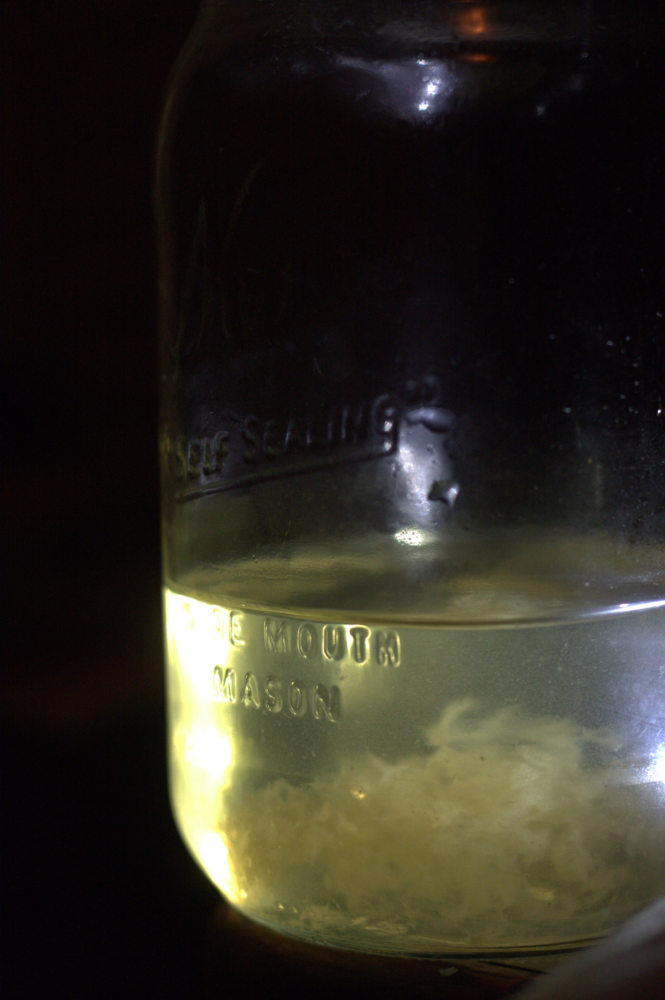

The Midnight Forager
Unearthing the hidden flavours of the Scottish Highlands under the cover of darkness. Our bespoke nocturnal expeditions guide you through ancient Caledonian pine forests at the hour when the forest floor yields its most concentrated, complex, and ephemeral ingredients — species that exist for mere hours before dawn reclaims them.
Request an Expedition
The Science of the Shadows
Sensory Shift
Wild fungi retain their highest concentrations of complex sugars and volatile oils before dawn. As temperatures drop, metabolic resources redirect inward, concentrating flavours to levels chemically impossible to replicate during daylight harvesting.
Undiluted Flavour
Harvesting before sunrise transpiration ensures a profoundly intense flavour profile. A chanterelle picked at midnight contains significantly more intracellular moisture and dissolved compounds, a fact we verify through live refractometer readings.
Absolute Stillness
The absence of visual dominance forces a perceptual shift. Smell, touch, and taste become primary, creating a heightened gastronomic awareness that fundamentally transforms how you experience the night's harvest.
Mycological Expertise
Led by a certified mycologist with 15+ years of Highland experience. This is a guided scientific foray into a biodiverse ecosystem, conducted with rigorous safety protocols where all specimens are double-verified.

Nocturnal Discoveries

Expedition Inclusions
- Expert Mycologist Guide: Fully certified and insured expert with 15+ years of Highland field identification experience, holding a Diploma in Field Mycology from the Royal Botanic Garden Edinburgh.
- High-Lumen Equipment: Military-grade 1,200-lumen headlamps with red-light mode for night vision preservation, bespoke wicker foraging trugs, and UV torches for fluorescent species identification.
- Private Chef Degustation: A 3-course seasonal menu prepared on-site over birch embers by our resident chef, incorporating the night's harvest within minutes of picking for maximum freshness and flavour intensity.
- Chauffeured Transport: Private return transport from your Highland accommodation in a heated Land Rover Defender, ensuring safe navigation of single-track forest roads in complete darkness.
- Specimen Identification Journal: A printed field journal documenting every species encountered during the foray, with photographs, Latin nomenclature, edibility classification, and ecological context notes.
- Wet Weather Provisions: Premium waterproof outerwear (Swazi Tahr jackets) and gaiters provided for all guests. Expeditions proceed in all weather conditions except electrical storms — rain enhances the forest floor's aromatic intensity.
The Expedition
A structured descent into the wilderness, guided by experts and culminating in firelight.
-
20:00 - Arrival & Briefing
Private transport collects your party from your accommodation. Upon arrival at the estate perimeter, you are equipped with high-lumen headlamps, bespoke wicker trugs, and briefed on safety protocols including wildlife awareness, terrain hazards, and emergency procedures. Your mycologist guide introduces the night's target species and explains the environmental conditions influencing their fruiting.
-
20:45 - The Forage
A guided, two-hour immersion into the ancient pine forests, identifying rare mycological specimens and nocturnal botanicals. The route is planned according to recent rainfall data, soil temperature readings, and historical fruiting maps maintained over 12 years of continuous fieldwork on this estate. Expect to encounter species ranging from common chanterelles and hedgehog fungi to rarer finds such as amethyst deceivers and scarlet elfcups.
-
23:00 - The Fireside Degustation
Retreat to our private off-grid woodland dining canopy — a weatherproofed, candlelit clearing with a stone-built fire pit and handcrafted oak dining table seating six. A private chef prepares a seasonal 3-course menu incorporating the night's harvest, cooked entirely over birch and cherry embers. Each course is accompanied by a paired Highland whisky or botanical non-alcoholic infusion.
-
01:30 - Return
Chauffeured return to your accommodation, carrying the lingering scent of woodsmoke and earth, a printed specimen journal documenting the night's discoveries, and if the season permits, a small foraged gift box of dried specimens for your own kitchen experiments.
Seasonal Availability
Our expeditions operate strictly during optimal foraging windows. Select a month below to view species availability and booking status.
Select a month above to view species availability and expedition details.
Safety & Certification
Every expedition is conducted under rigorous safety protocols and professional certification standards.
Certified Mycologist
Diploma in Field Mycology (RBGE). Active British Mycological Society member. All specimens are double-verified using macroscopic and microscopic identification before any culinary preparation. Spore print analysis is conducted on-site for any ambiguous specimens.
Emergency Protocols
All guides carry satellite communication devices, comprehensive first-aid kits, and emergency flares. GPS coordinates of the group are logged every 15 minutes with our operations base. An emergency evacuation route is briefed before every foray.
Insurance & Liability
Full public liability insurance (£5M cover) and professional indemnity insurance specific to wild food preparation. All guests sign a comprehensive risk acknowledgement document and are briefed on personal safety responsibilities before departure.
Dietary & Allergy
All dietary requirements and allergies are captured during the booking process and communicated directly to the chef. Vegetarian and vegan degustation menus are available by prior arrangement, utilising exclusively foraged plant and fungal ingredients.
Secure Your Expedition
Our expeditions operate strictly during optimal seasonal windows. Group sizes are intimately capped at a maximum of 6 guests to preserve the silence and exclusivity of the forest. We recommend booking at least 6 weeks in advance during peak season (July–September).
Gastronomic Acclaim